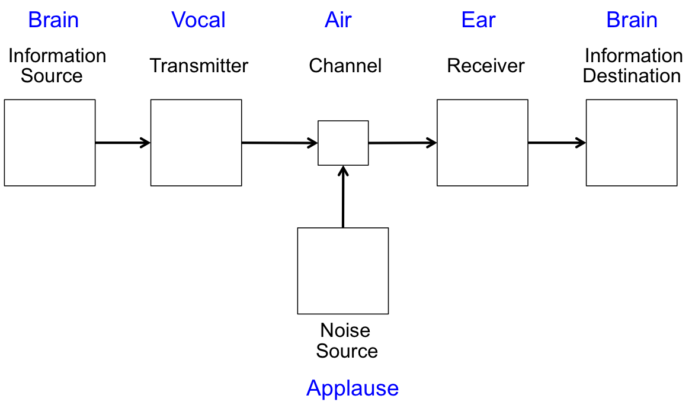

People, Information, and Computers
People have been sharing information with each other for as long as we have been. We love information. We love to talk with our friends and share information. We will talk about everything and anything. We talk about weather, food, school, work, sports, politics, music, movies, and hobbies. If I hear that we are expecting a snowstorm, I am quick to share that with my friends. When one of my friends gets a new hairdo, I will share that information with my other friends. We have newspapers, magazines, and websites that are full of information. Some of today’s most profitable comppanies provide information - Google, Facebook.
Exactly what is information.
Information – Stuff that is good to know and can be communicated. Information can be encoded in various forms. We perceive information with our senses (eyes, ears, nose, and touch), store our perceptions in our brain, and share our perceptions with others.
The following diagram shows a general form of information communication. The blue font shows a normal way of two people communicating using their vocal chords and aural canals. In this communication, the channel is air - sound flows through the air from one person’s mouth into the other person’s ears. There can be some noise source that messes up the communication. The diagram shows applause at some football game that may mess up the communication.

Computers are machines, not people, but computers are good at processing information. In fact information is a key ingredient in our definition of a computer.
Computer – A machine that stores and manipulates information under the control of a changeable program.
We will be writing lots of programs. A program will consist of algorithms and data. The data is our information and the algorithms manipulate the data. The data we create will be in variables. Each variable will have a type. The algorithms will use assignment statements, expressions, method calls, conditional statements, and loop statements.
Computer Diagram (Eck 1.1)
The following diagram is a simpler version of the ones on pages 3 and 4 of Eck’s book. The figure on page 3 shows the CPU accessing memory as a sequence of bytes. The figure on page 4 shows the CPU accessing main memory, secondary memory, input devices, and output devices using a bus.
Computer Diagram With Software (Eck 1.1)
The following diagram shows how software is stored on secondary memory (a disk, which is either a rotating disk or a solid state disk). Software is loaded into main memory and executed by the Central Processing Unit (CPU) following the fetch-execute paradigm. We will execute the code in Section BBDT.7 as a classroom exercise to demonstrate the fetch-execute cycle. Newer computers are equipped with solid-state disks, which are more expensive per byte than the traditional rotating disk drives. The Surface Pro and MacBook Pro/Air typically have solid-state disks.
Figure - Computer Diagram with Programs
Compiling High-level Code (Eck 1.3)
A compiler generates machine code that can be directly executed by the CPU of a computer. Machine code is binary code stored in memory; however, there is assembly language that is a one-to-one correspondence to machine code. People can read assembly code. We will walk through an example of assembly code.
Figure - Compiling High-level Code
Interpreting Code (Eck 1.3)
An interpreter reads the source code and interprets the statements. You will notice that an interpreter is a program executing on a CPU. An interpreter has been compiled into machine code. An interpreter is one of the programs
Figure - Interpreting Code
Java Byte Code Interpreting (Eck 1.3)
Java is executed by a combination of compiling and interpreting. The Java source code is compiled into a Java-defined “assembly” language that is called Java byte code. The byte code is interpreted by the Java interpreter. The Java source code is contained in files with a .java extension. The Java byte code is contained in files with a .class extension. The .class files can be moved between computers. You have to have a Java interpreter on a computer to run the .class files.
Figure -Java Byte Code Interpreting
Java Code Snippet - to Assembly Code
The following Java code shows a simple algorithm, which will be translated into its corresponded assembly language in the next section.
int x = 1;
int y = 2;
int z;
if (x < y) {
z = x + y;
}
else {
z = x – y;
}
Assembly Code - Corresponding to Java Code Snippet
The following is the corresponding assembly code for a generic assembly instruction set. Each CPU has their own assembly language. For example ARM CPUs (which are used in mobile devices such as smart phones and tablets) have different assembly language than the Intel I5 CPUs (which are used in laptops and desk tops). You will be wise to realize that the following assembly language example is neither ARM nor Intel; however, it is reflective of most all assembly languages.
load 1, R1
store R1, x
load 2, R2
store R2, y
compare R1, R2
jump GEQ, ELSE
add R1,R2,R3
store R3, z
jump ENDIF
ELSE: subtract R1, R2, R3
Store R3, z
ENDIF: …
Portability
Code is portable if it can be moved from one computer to another, with little (or no modifications). Assembly code is NOT portable – it only runs on the computer that has that assembly code. High level code is portable. For programs in C/C++ or other compiled languages, you will have to recompile the code before running on another machine. For programs written in Java or other byte code languages, you can move the byte code and run it in the Java RTE.